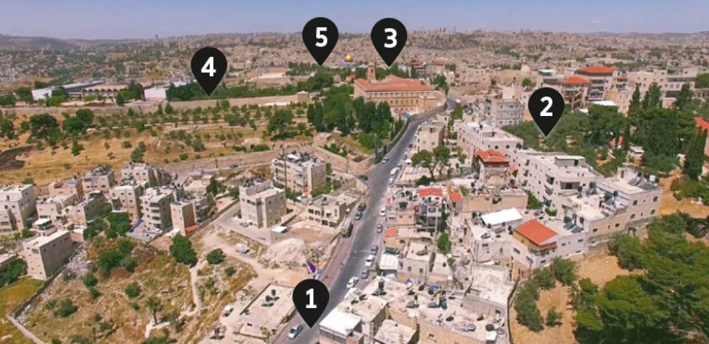
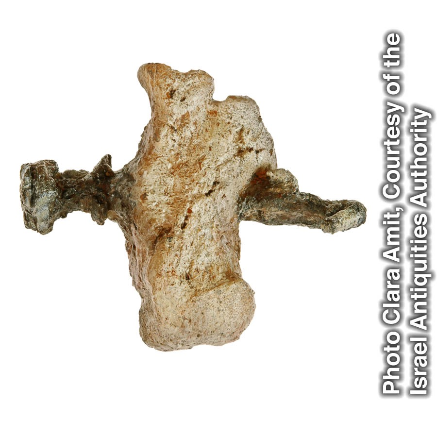

Photos, artwork, and silent videos and animations illustrate various details recorded in the Bible.
Bethphage, the Mount of Olives, and Jerusalem
This short video follows a path approaching Jerusalem from the east, from the village of modern-day et-Tur—thought to correspond to the Biblical Bethphage—to one of the higher points on the Mount of Olives. Bethany lies east of Bethphage on the eastern slope of the Mount of Olives. When in Jerusalem, Jesus and his disciples customarily spent the night at Bethany, today marked by the town of el-ʽAzariyeh (El ʽEizariya), an Arabic name meaning “The Place of Lazarus.” Jesus undoubtedly stayed at the home of Martha, Mary, and Lazarus. (Mt 21:17; Mr 11:11; Lu 21:37; Joh 11:1 ) When traveling from their home to Jerusalem, Jesus may have followed a route similar to the one shown in the video. On Nisan 9, 33 C.E., when Jesus rode the colt of a donkey over the Mount of Olives to Jerusalem, he may well have done so from Bethphage, following the road to Jerusalem.

Road from Bethany to Bethphage
Bethphage
Mount of Olives
Kidron Valley
Temple Mount
Nail in a Heel Bone

This is a photograph of a replica of a human heel bone pierced by an iron nail that was 11.5 cm (4.5 in.) long. The original artifact was found in 1968, during excavations in northern Jerusalem, and dates to Roman times. It provides archaeological evidence that nails were likely used in executions to fasten the person to a wooden stake. This nail may be similar to the nails employed by the Roman soldiers to fasten Jesus Christ to the stake. The artifact was found in a stone box, called an ossuary, into which the dried bones of a deceased person were placed after the flesh had decomposed. This indicates that someone executed on a stake could be given a burial.—Mt 27:35 .